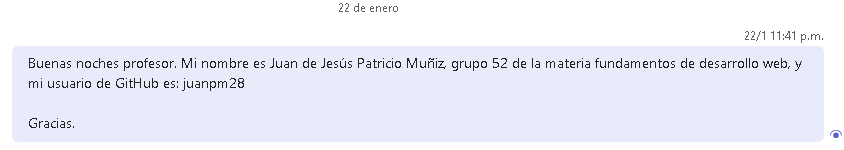
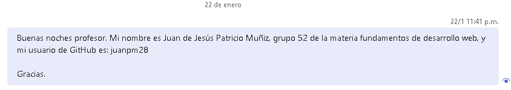

Práctica 1
Crear cuenta github y mandar mensaje por chat de Teams.
No es necesario links.
Crear cuenta github y mandar mensaje por chat de Teams.
No es necesario links.
Publicar pagina web sencilla en cuenta personal Github.
Fecha commits: 29 al 31 de enero.
Links:
Modificar página pasatiempos. Utilizando 5 archivos html empleando etiquetas de estructura (header,nav, main,aside,footer) con etiquetas de estructura (nav).
Fecha commits: 5 al 7 de febrero.
Link:
Modificar su link personal en la organización. Quitar nombre completo y poner usuario de GitHub, crear carpeta y archivo index.html personal.
Fecha commits: 10 al 12 de febrero.
Link:
El sitio web personal sobre sus pasatiempos debe ser modificado y cargado a la organización dentro de su carpeta personal. Se deben agregar nuevas etiquetas de las paginas 27, 29, 30,31,32 del material de clase.
Fecha commits: 12 al 14 de febrero.
Link:
Realizar dentro de la organización una modificación a su archivo index.html personal y colocar los links que se indican en este documento. Así tambien se debe agregar un formulario a su sitio web pasatiempos de la organización.
Fecha commits: 17 al 26 de febrero.
Link:
Realizar Commit con cuenta del maestro. Se modificó un archivo html del alumno.
No existe una fecha en específico para el commit.
No es necesario links.